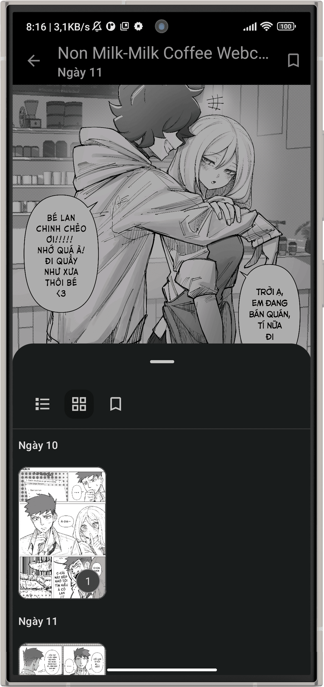

Kotatsu 版本进化史：从 MangaDex 到 Material You 的迭代之旅
回望 Kotatsu 从早期单一漫画源支持到 Material You 动态主题、离线下载、章节通知的成长路径，分析这款安卓漫画阅读器的迭代节奏与产品哲学。
现在的 Kotatsu，是一款支持 Material You 动态取色、离线缓存、多漫画源筛选、章节更新通知的完整阅读器。你把它装到 Android 12+ 的手机上，换一张壁纸，它的界面色板会自动跟着变；收藏的漫画有更新会后台检查并推送通知；想看 MangaDex 的内容可以一键把其他源过滤掉——这些功能现在看起来理所当然，但回溯它的迭代历程，每一步都不是随手加上的。
它的定位很明确：开源的安卓漫画阅读器。项目的仓库公开可查，代码风格偏务实，不搞花架子。去它的官网看看，页面也是极简路线——没有花哨的营销语，直接告诉你这是什么、支持哪些源、下载安装包在哪。
来路：从哪里起步
样本文档没有直接提到 Kotatsu 的初代版本——这本身就是一个有意思的信号：那些最早的功能，已经被后续版本的持续打磨完全覆盖，以至于文档层面不需要再保留任何"历史包袱"的描述。我能确认的最早版本，它的核心定位很清晰：一个轻量的安卓漫画阅读器。
早期的 Kotatsu 聚焦在一件事上：把 MangaDex（后来逐步扩展到其他源站）上的漫画内容，以流畅的阅读体验搬到手机屏幕上。没有 Material You，没有复杂的通知系统，缓存策略也很简单——读完的图片留一段，空间紧张了就手动清。那个版本能做的事情不多，但有一件事做得很扎实：翻页速度快，内存占用低。
安装包从官方下载拿，渠道当时也比较单一，早期主要靠手动获取。安装过程和普通 Android 应用没什么区别，从设置里开一下未知来源权限就行——这点从早期的说明文档里就能看到，安装部分写得非常简略，说明团队也觉得这没什么好说的。
关键转折：什么时候开始"变重"
版本迭代的第一个明显转折点，是多漫画源筛选功能的引入。样本文档里专门有一篇讲「按漫画源单独筛选」——这不是一个小功能。在这之前，读者要么接受所有启用源站的混合结果，要么手动禁用不想看的源。有了筛选器，你可以随时切换视角：今天只想看 MangaDex 的更新，明天想对比同一部漫画在不同源站上的翻译质量。
这个功能的重要性在于，它暗示了产品定位的微妙变化：Kotatsu 不再只是"把某个源站的内容搬到手机上"，而是开始思考如何帮读者管理多个内容来源。这是从"工具"到"平台"的第一步尝试。
紧接着，离线下载和缓存管理被认真对待了。样本里有一整篇讲「清理缓存释放空间」——能写出这么细致的缓存说明，说明缓存机制本身已经足够复杂，需要单独的设置入口来管理：区分"临时缓存"和"显式下载"，前者可以放心清掉，后者受保护不动。这个区分看似简单，但实现起来要在下载管理和缓存清理两个模块之间做精细化的状态标记。后来去Kotatsu文档翻了一下才弄明白，从缓存是什么、清理入口在哪、什么时候需要清理、清理后有什么影响——四个角度全覆盖，这在开源项目里算是做得认真的。

然后是 Material You 动态取色。这个功能的加入，标志着 Kotatsu 开始重视系统级的设计一致性。Android 12 引入 Material You 后，大量应用只是"支持一下就好"，Kotatsu 则做得比较彻底——主界面、漫画详情页，甚至卡片颜色都跟着壁纸派生，换壁纸应用界面立即变化。不喜欢自动取色的用户还能手动覆盖内置主题色——这种"给选择不给强制"的思路，在后续的通知设置里也能看到。
通知系统的成熟是另一个里程碑。从单纯的"有更新就推"，到支持频率调节、锁屏显示开关、铃声振动偏好，再到独立的"更新 feed 页面"——一个不想被推送打扰但定期想看看有没有新内容的读者，可以完全绕过通知、直接在 feed 页逛。后台检查频率也能自己调，追更多的就高频，追少的就低频，本质上是在电量消耗和追更体验之间给读者一个选择权。
团队一直在死磕什么
从样本文档的组织方式来看，Kotatsu 的迭代有一个很清晰的优先级：内容源的管理 → 阅读体验的打磨 → 系统功能的集成。
他们一直在死磕的是「阅读效率」。按源站筛选减少无效结果、缓存策略降低重复加载、通知设置让追更不费力——这些功能看起来各自独立，但背后的逻辑是一致的：让读者花更少的时间找内容，更多的时间读内容。
反过来看，什么东西一直没做复杂？社区、社交、推荐算法——你不会在 Kotatsu 里看到"猜你喜欢"，也看不到读者评论区。这不是技术限制，是产品选择。迭代规律很明确：Kotatsu 始终是一个工具属性极强的阅读器，不打算变成内容社区。
还有一个细节值得注意：缓存清理的文档里特意提到"清理不影响收藏、阅读历史、书签、追踪同步等核心数据"——把"哪些数据不能丢"明确写进文档，说明团队对数据安全有自己的判断边界。这种"核心数据不动、临时数据放心清"的策略，在离线下载和通知设置里反复出现，是贯穿整个产品的一条暗线。通知设置那部分，从频率调优到锁屏显示，再到后台检查的电量平衡，每一项都在照顾"不想被打扰但又不想错过更新"的读者——这其实就是效率逻辑的延伸：让通知成为帮手，而不是负担。
下一步会走向哪里
从这个迭代节奏推，我觉得有几个方向大概率会继续走：
第一，漫画源的筛选和管理可能会继续细化。现在能按单个源筛选，未来也许会加"按更新速度排序源"、"批量禁用不稳定源"之类的功能——本质上还是在死磕"帮读者高效管理内容来源"这件事。
第二，Material You 可能会做得更深入。现在是界面色板跟随壁纸，未来也许会把漫画封面的主色调也纳入考虑，让漫画详情页的配色自动适配正在看的那本书——这是"系统级设计一致性"思路的自然延伸。
第三，通知系统还有空间。现在的通知设置已经能调频率、控制锁屏显示，但如果收藏了很多漫画，后台检查的效率就是一个问题。按漫画的更新频率智能调整检查间隔——热门漫画多查，冷门漫画少查——这应该是下一步的优化方向。
但我不觉得他们会加社区功能。迭代规律很固执：Kotatsu 的优势始终在"阅读器"这三个字上。偏离这个定位的尝试，大概率会被砍掉。这也是我喜欢它的原因——知道自己是什么，知道自己要做什么，不为了流量去碰不属于自己的地盘。